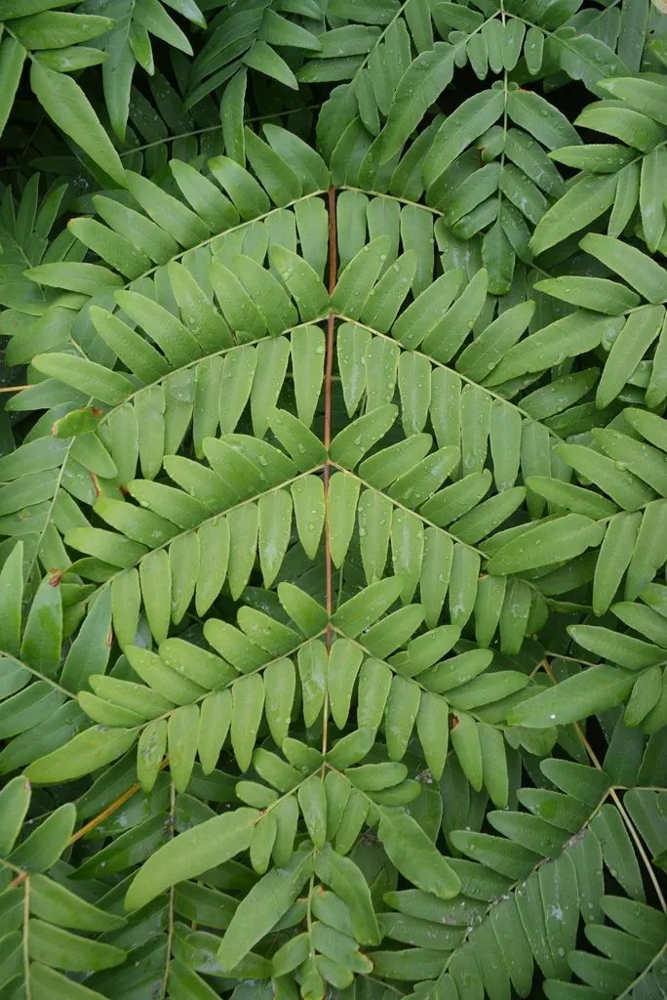

蕨类与裸子植物 · 植物界
紫萁 Osmunda japonica

紫萁的嫩叶可加工成山珍“薇菜”，孢子叶密生褐色孢子、形如麦穗，是东亚常见的食用与观赏蕨类。
- 分类
- 门蕨类植物门纲水龙骨纲目紫萁目科紫萁科属紫萁属
- 栖息环境
- 林下、溪边与阴湿山坡，喜温暖湿润半阴
- 地理分布
- 中国长江以南及华北部分山地，日本、朝鲜半岛也有分布
- 保护级别
- 暂无评估；野生资源因采摘需合理利用
物种志
紫萁是紫萁科多年生蕨类，株高 0.5–1 m。根状茎粗壮直立，叶二型：营养叶为二回羽状复叶，羽片细密，幼时拳卷并密被白色绒毛，展开后绿色；孢子叶较短，羽片紧缩，密生褐色孢子囊，形似麦穗，成熟后枯黄。营养叶和孢子叶都由同一根状茎抽出。
紫萁喜温暖湿润、半阴环境，多生于林下、溪边与阴湿山坡，在东亚分布广泛。春季拳卷的嫩叶是著名的山野菜，加工干制后称“薇菜”，是出口创汇的传统山珍；根状茎和幼叶上的绒毛可入药，有清热解毒、止血之效。紫萁以孢子繁殖，也可分株，叶形优美，适合林下栽培观赏。采摘薇菜应掌握时机，过度采摘会影响种群更新，需合理利用。
形态与习性
- 株高0.5–1 m
- 叶二型，营养叶二回羽状
- 孢子叶羽片紧缩，密生褐色孢子
- 食用嫩叶干制称“薇菜”
- 药用根状茎与绒毛清热解毒、止血
趣味知识
- 紫萁的嫩叶拳卷时密生白色绒毛，是著名的山野菜“薇菜”的原料。
- 它的孢子叶密生褐色孢子，看起来像一根麦穗。
- 薇菜是传统出口山珍，采摘过度会影响紫萁种群更新。